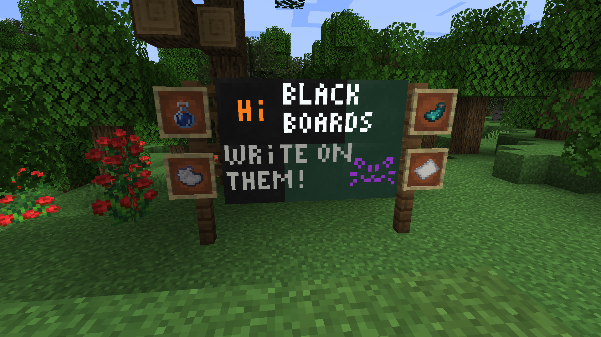
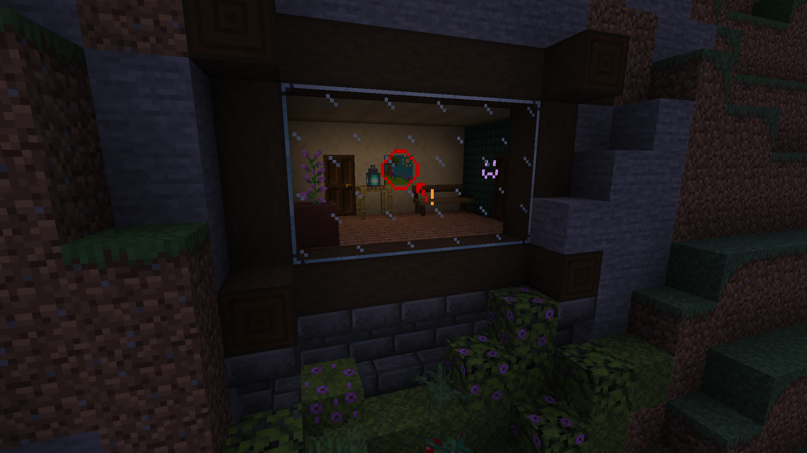

Blackboards
Blackboards are blocks which you can draw on with dyes. They come in three variants: blackboard, chalkboard (green), and glassboard (transparent).
They also can be worn as masks on the helmet slot, and on a dedicated slot if Trinkets is present.
To place them they will need a support block, like candles, and they won't break if the support block is removed afterwards.
 Blackboards and Chalkboards
 Glassboards!
Crafting
Blackboard
| Crafting Table | ||
|---|---|---|
| Stick | Stick | Stick |
| Stick | Black Concrete | Stick |
| Stick | Stick | Stick |
Chalkboard
| Crafting Table | ||
|---|---|---|
| Stick | Stick | Stick |
| Stick | Green Concrete | Stick |
| Stick | Stick | Stick |
Glassboard
| Crafting Table | ||
|---|---|---|
| Stick | Stick | Stick |
| Stick | Glass Pane | Stick |
| Stick | Stick | Stick |
Copy
You can copy a blackboard's content onto another blackboard by combining a drawn blackboard and an empty blackboard in a crafting grid.
Drawing
To draw on a blackboard use a dye on blackboard in-game, it will color the targeted pixel. You can shade a pixel using bone meal to lighten it, or coal to darken it.
To draw multiple things at once, you can hold in your off-hand:
- a white wool to use a "brush".
- a bucket to fill an area.
- an ender-pearl to replace a color.
- a stick to draw lines.
To erase a blackboard you can either:
- put it in water
- use a water bucket on it
- use a water potion on it, will consume the water in the bottle
- place a non-waxed blackboard in water
You also can erase a single pixel with paper.
A blackboard can glow in the dark if a glow ink sac is used on it, to stop the glow a normal ink sac can be used.
Once you are satisfied with your drawing you can use wax it using honeycomb, either by right-clicking it or by using a smithing table. Waxed blackboards are made uneditable.
Dyes
- White Dye
- Orange Dye
- Magenta Dye
- Light Blue Dye
- Yellow Dye
- Lime Dye
- Pink Dye
- Gray Dye
- Light Gray Dye
- Cyan Dye
- Purple Dye
- Blue Dye
- Brown Dye
- Green Dye
- Red Dye
- Black Dye
- Sweet Berries
- Glow Berries
- Lavender
- Blueberries (if Ecotones is present)